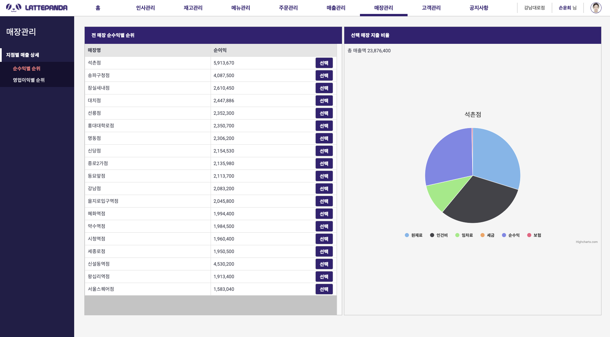
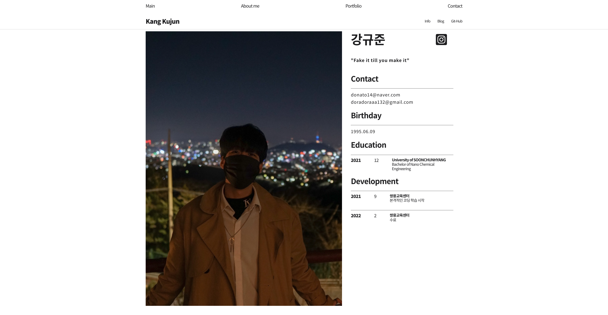

👋🏼 Hi there, I'm Kujun.
I'm a Web Developer especially, interested in Front-End Dev.
For now I can use
Welcome to my site. Have a FUN ⭐️
I'm a Web Developer especially, interested in Front-End Dev.
For now I can use
Welcome to my site. Have a FUN ⭐️
Producing ERP at a franchise coffee shop.
Java 기반의 Servlet 과 JSP를 사용해 구현한 ERP 홈페이지 입니다.
Front-End와 Back-End 모두 경험해 볼 수 있었으며 특히 Oracle 을 사용해 DB를 관리하며 화면단에 필요한 데이터의 값을 출력할 수 있었습니다.
사용 기술 :
점장 직급의 계정으로 로그인시 홈화면으로 표시되는 대시보드 화면입니다. 점장 외의 직급의 계정 로그인시 대시보드 화면이 아닌 직급에 맞는 화면이 출력되게 됩니다.
점장은 현 대시보드 화면에서 자신이 관리하는 매장의 일, 월 매출과 상품별 판매량, 공지사항, 재고상황에 대해 확인할 수 있습니다.
JSP의 쿼리 메소드문을 사용하여 HighChart 를 사용해 출력했습니다.
지점장 직급의 계정으로 로그인시 홈화면으로 표시되는 대시보드 화면입니다. 점장 직급의 화면과는 다른 요소들을 확인하실 수 있습니다. 지점장 직급 이외의 직급은 접근이 제한됩니다.

모든 지점에 대해 총 매출가격에 대한 순이익을 구하는 공식을 사용하여 순이익이 높은 매장순으로 나열된 표 입니다.
버튼 선택시 해당하는 매장에 대한 비율 그래프가 출력됩니다.
모든 지점에 대해 총 매출가격에 대한 영업이익을 구하는 공식을 사용하여 영업이익이 높은 매장순으로 나열된 표 입니다.
버튼 선택시 해당하는 매장에 대한 비율 그래프가 출력됩니다.
My 2021 Web-portfolio using scroll animation.

기본적으로 다른 프로젝트인 "apple clone" 에서 영감을 얻어 만든 포트폴리오입니다.
자바스크립트를 처음 배우던 때에 스크롤 애니메이션 등 다양한 기술들을 사용해 볼 수 있어 좋은 기회이기는 하였으나,
배움이 깊지 않던 시기에 많은 것을 소화하기에는 어려움이 있었습니다. 이해하려 노력하였고 이 프로젝트를 진행하며 JS 실력이 많이 향상 된것은 사실이나
인터랙티브한 요소가 많아 포트폴리오용으로서는 적합하지 않다는 판단하에 2022년도가 되자마자 새로운 정적인 포트폴리오를 제작하기로 마음먹었습니다.
사용 기술 :

포트폴리오 탭의 화면 구성입니다. Grid 를 사용해 2열로 반복하게 구성하였으며, JS를 이용해 마우스 오버시에 트랜지션 효과를 적용해 애니메이션화 하였습니다.
개인 사진과 함께 인적사항을 적은 페이지입니다. 인스타그램 링크와 깃허브 링크를 첨부하여 직접 연락하기에도 용이하며 작업물들을 보기에도 적합하다 생각합니다.
현재 창 클릭시 창이 종료됩니다.Interactive page composition through Apple's scroll animation.

인터랙티브한 JS를 배우기 위해 강의를 들으며 만들었던 페이지입니다.
사용 기술 :
스크롤을 확인할 수 있으며 현재 스크롤된 값에 따라 Canvas가 변화하여 백그라운드 동영상이 재생되게 됩니다.
현재 창 클릭시 창이 종료됩니다.The web changes depending on the size using the flex function.
Flex, 모바일 화면을 대응하기 위한 @media 기능을 연습하며 제작한 페이지입니다.
사용 기술 :
모바일 대응 화면입니다.
현재 창 클릭시 창이 종료됩니다.Chrome app "Momentum" clone.

사용 기술 :
자바스크립트를 공부하며 만든 클론 페이지로 로컬스토리지를 사용해 로그인과 Todo List를 제작하였습니다.
새로고침을 할 때마다, 배경화면과 하단의 명언 한 마디가 변경되게 됩니다.
웹 API를 사용해 현재 날씨를 좌표에 맞게 표시하게 하였습니다.
Use Java to create a console for banking services.

교육센터에 입교한 뒤 첫 프로젝트로써 자바언어를 사용한 콘솔 프로젝트입니다.
사용 기술 :
계좌해지 파트입니다. 로그인한 계정의 id를 csv 파일에서 찾아내 해당 id에 연계되어 있는 계좌를 찾아 출력한 뒤,
해지하는 기능을 구현 하였습니다.
해지를 원하는 계좌의 번호를 입력하면 해당 계좌에 잔액을 옮길 계좌를 선택하면 잔액이 옮겨지고 계좌가 삭제되는 알고리즘을 가지고 있습니다.